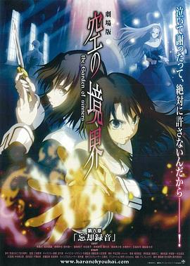

空之境界 第六章 忘却录音 / 劇場版 空の境界 第六章 忘却録音
又名：空之境界剧场版：第六章 忘却录音(台) / 空之境界电影版6：忘却录音 / Chapter6 The Garden of Sinners - fairy tale
不错，整体设定。
作品信息
| 导演 | 三浦贵博 |
| 编剧 | 平松正树 |
| 主演 | 坂本真绫 / 铃村健一 / 本田贵子 / 藤村步 / 水树奈奈 / 置鲇龙太郎 / 喜多村英梨 / 石上裕一 / 井口裕香 / 保志总一朗 / 中田让治 |
| 类型 | 剧情 / 动作 / 动画 / 恐怖 |
| 制片国家/地区 | 日本 |
| 语言 | 日语 |
| 上映日期 | 2008-12-20 |
| 片长 | 59分钟 |
| IMDb | tt1343089 |
最后一次看到是 2026-08-01T11:07:23+10:00 · 豆瓣原页